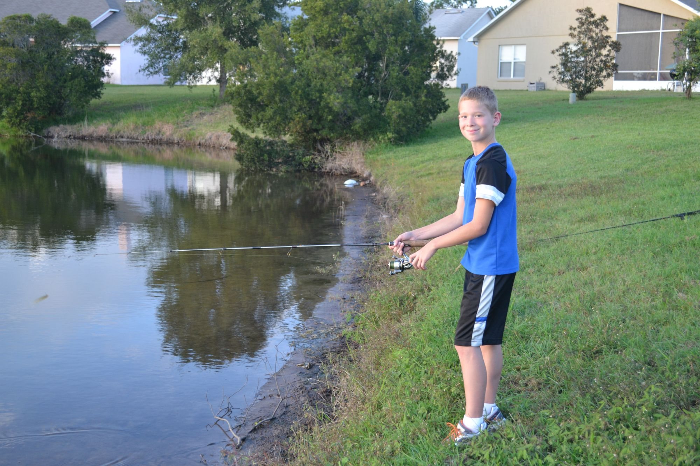
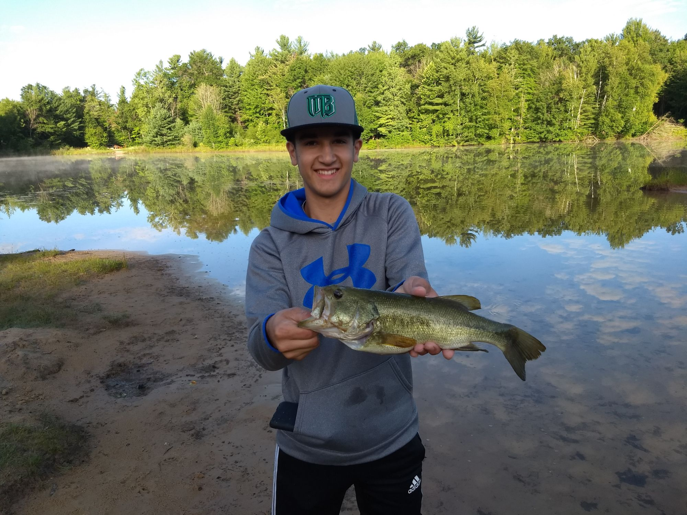

In the spring time, I am just itching to get outside and fish. Living in Michigan, I have to watch as my southern friends catch fish after fish. Meanwhile, the waters in Michigan are still frozen over. But by summer time, the bass better be looking out.
I have been fishing for as long as I can remember. When I was very young, my family would go up to Canada for a week every summer and we would fish every night. We would catch so many fish! After we got back to our cabin, we would fillet the fish, and then my grandma would cook them in batter and we would have a fish fry.
One time, when I was about, I caught a huge sunfish the size of a dinner plate. We would take several boxes of nightcrawlers with us, and bring back a bunch of fish. It was always a blast!

As I grew older, and we stopped going to Canada, I really got into bass fishing. I would look on google maps to find water near my house, and I would use my free time to explore and fish.
Now there are a lot of different ways to fish for bass. My favorite is using a wacky rig.
Wacky Rig
The wacky rig is a very popular method of bass fishing, and when used properly, will land your limit in short time.
In short, all you have to do is put the hook right through the center of an artificial worm and cast it out there. I prefer to throw out a green worm with red specks in it on my spinning rod. That color worm has worked the best for me, although it also depends on the water conditions.
After casting it out, I let it sink all the way to the bottom. As the worm falls in the water, it wiggles and gives it a lot of action. Then once it gets near the bottom, I will give it a few tugs, and real in the slack, and then let it fall again. I do this all the way until it gets back to me. One important thing to note is that bass will many times hit the worm as it is falling, so it's important to watch your line. If you see that line start to move, set your hook, and be ready for a battle.
Teach others the things that you enjoy
I am so thankful for my dad and grandpa for taking me up to Canada and teaching me to fish. Because of them, I have an love for fishing that can only be quenched by getting out on the water.
Invest in today's youth. Get out and teach them how to fish!This past year, I had so much fun taking my friend Charley out fishing. He was so excited to get outside and to try it out. I showed him how to fish with the wacky rig, and he ended up catching the biggest bass of the day! Those are memories that you will keep for the rest of your life. I know that I will remember that day for as long as I live.
As soon as I get back from college, I will be out on the water again. And you better believe I will be rigging up a wacky rig on my spinning rod.